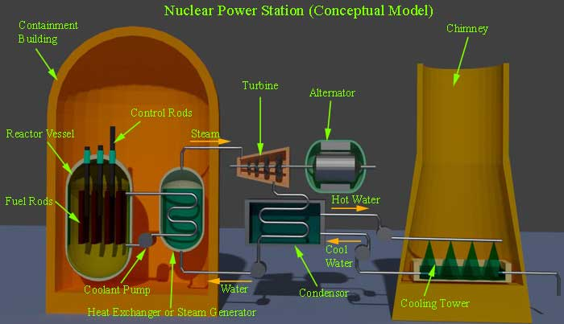

• Disadvantages
Different Components of Nuclear Power Station
• Nuclear Reactor
• Heat Exchanger
• Steam Turbine
• Alternator
Site Selection of Nuclear Power Station
Electrical power can be generated by means of nuclear power. In nuclear power station, electrical power is generated by nuclear reaction.
Here, heavy radioactive elements such as Uranium (U235) or Thorium (Th232) are subjected to nuclear fission. This fission is done in a special apparatus called as reactor.
Before going to details of nuclear power station, let’s try to understand what is fission?
In fission process, the nuclei of heavy radioactive atoms are broken into two nearly equal parts. During this breaking of nuclei, huge quantity of energy is released. This release of energy is due to mass defect. That mean, the total mass of initial product would be reduced during fission. This loss of mass during fission is converted into heat energy as per famous equation E = mc2, established by Albert Einstein.
The basic principle of nuclear power station is same as steam power station. Only difference is that, instead of using heat generated due to coal combustion, here in nuclear power plant, heat generated due to nuclear fission is used to produce steam from water in the boiler. This steam is used to drive a steam turbine. This turbine is the prime mover of the alternator. This alternator generates electrical energy. Although, the availability of nuclear fuel is not plenty but very less amount of nuclear fuel can generate huge amount of electrical energy. This is the unique feature of a nuclear power plant. One kg of uranium is equivalent to 4500 metric tons of high grade coal. That means complete fission of 1 kg uranium can produce as much heat as can be produced by complete combustion of 4500 metric tons high grade coal. This is why, although nuclear fuel is much costlier, but nuclear fuel cost per unit electrical energy is still lower than that cost of energy generated by means of other fuel like coal and diesel. To meet up conventional fuel crisis in present era, nuclear power station can be the most suitable alternatives.
Advantages of Nuclear Power Station
- As we said, the fuel consumption in this power station is quite low and hence, cost for generating single unit is quite less than other conventional power generation method.
- A nuclear power station occupies much smaller space compared to other conventional power station of same capacity.
- This station does not require plenty of water, hence it is not essential to construct plant near natural source of water. This also does not required huge quantity of fuel; hence it is also not essential to construct the plant near coal mine, or the place where good transport facilities are available. Because of this, the nuclear power station can be established very near to the load centre.
Disadvantages of Nuclear Power Plant
- The fuel is not easily available and it is very costly.
- Initial cost for constructing nuclear power station is quite high.
- Erection and commissioning of this plant is much complicated and sophisticated than other conventional power station.
- The fission by products are radioactive in nature, and it may cause high radioactive pollution.
- The maintenance cost is higher and the man power required to run a nuclear power plant is quite higher since speciality trained people are required.
- Sudden fluctuation of load cannot be met up efficiently by nuclear plant.
- As the by products of nuclear reaction is high radioactive, it is very big problem for disposal of this by products. It can only be disposed deep inside ground or in a sea away from sea share.

Different Components of Nuclear Power Station
A nuclear power station has mainly four components.
- Nuclear reactor,
- Heat exchanger,
- Steam turbine,
- Alternator.
Let’s discuss these components one by one:
Nuclear Reactor
In nuclear reactor, Uranium 235 is subjected to nuclear fission. It controls the chain reaction that starts when the fission is done. The chain reaction must be controlled otherwise rate of energy release will be fast, there may be a high chance of explosion. In nuclear fission, the nuclei of nuclear fuel, such as U235 are bombarded by slow flow of neutrons. Due to this bombarding, the nuclei of Uranium is broken, which causes release of huge heat energy and during breaking of nuclei, number of neutrons are also emitted.
These emitted neutrons are called fission neutrons. These fission neutrons cause further fission. Further fission creates more fission neutrons which again accelerate the speed of fission. This is cumulative process. If the process is not controlled, in very short time the rate of fission becomes so high, it will release so huge amount of energy, there may be dangerous explosion. This cumulative reaction is called chain reaction. This chain reaction can only be controlled by removing fission neutrons from nuclear reactor. The speed of the fission can be controlled by changing the rate of removing fission neutrons from reactors.
A nuclear reactor is a cylindrical shaped stunt pressure vessel. The fuel rods are made of nuclear fuel i.e. Uranium moderates, which is generally made of graphite cover the fuel rods. The moderates slow down the neutrons before collision with uranium nuclei. The controls rods are made of cadmium because cadmium is a strong absorber of neutrons.
The control rods are inserted in the fission chamber. These cadmium controls rods can be pushed down and pull up as per requirement. When these rods are pushed down enough, most of the fission neutrons are absorbed by these rods, hence the chain reaction stops. Again, while the controls rods are pulled up, the availability of fission neutrons becomes more which increases the rates of chain reaction. Hence, it is clear that by adjusting the position of the control rods, the rate of nuclear reaction can be controlled and consequently the generation of electrical power can be controlled as per load demand. In actual practice, the pushing and pulling of control rods are controlled by automatic feedback system as per requirement of the load. It is not controlled manually. The heat released during nuclear reaction, are carried to the heat exchanger by means of coolant consist of sodium metal.
Heat Exchanger
In heat exchanger, the heat carried by sodium metal, is dissipated in water and water is converted to high pressure steam here. After releasing heat in water the sodium metal coolant comes back to the reactor by means of coolant circulating pump.
Steam Turbine
In nuclear power plant, the steam turbine plays the same role as coal power plant. The steam drives the turbine in same way. After doing its job, the exhaust steam comes into steam condenser where it is condensed to provide space to the steam behind it.
Alternator
An alternator, coupled with turbine, rotates and generates electrical power, for utilization.
Site Selection of Nuclear Power Station
- Availability of water : Although very large quantity of water is not regulated as hydro-electric power plant, but still sufficient supply of neutral water is obvious for cooling purposes in nuclear power station. That is why it is always preferable to locate this plant near a river or sea side.
- Disposal of Water : The by products or wastes of nuclear power station are radioactive and may cause severe health hazards. Because of this, special care to be taken during disposal of wastes of nuclear power plant. The wastes must be buried in sufficient deep from earth level or these must be disposed off in sea quite away from the sea share. Hence, during selecting the location of nuclear plant, these factor must be taken into consideration.
- Distance from Populated Area : As there is always a probability of radioactivity, it is always preferable to locate a nuclear station sufficiently away from populated area.
- Transportation Facilities : During commissioning period, heavy equipments to be erected, which to be transported from manufacturer site. So good railways and road ways availabilities are required. For availability of skilled manpower good public transport should also be present at the site.
 by
by